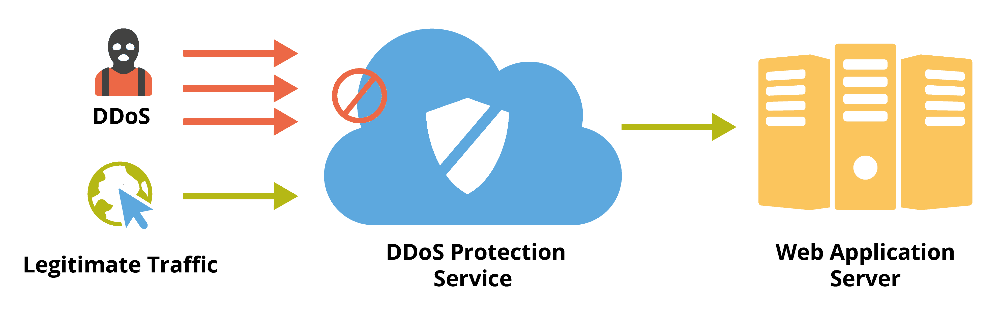

Beveiliging Termen
DDoS:
DDoS staat voor distributed denial-of-service. Een distributed denial-of-service (afkorting: DDoS) is een aanval op een website en/of webserver(s) met als doel deze uit de lucht te halen. Bij een DDoS-aanval wordt met een groot netwerk aan computers een dermate grote hoeveelheid aanvragen naar de betreffende website of server verstuurd, dat de server dit verkeer niet aankan en niet of zeer moeilijk bereikbaar wordt. De systemen die bij een distributed denial of service worden ingezet zijn doorgaans niet in het bezit van degene die de aanval uitvoert. Vaak wordt gebruik gemaakt van geïnfecteerde computers die op afstand opdrachten kunnen uitvoeren, meestal zonder dat de eigenaar het merkt. Wanneer door dit soort aanvallen ook netwerkproblemen ontstaan kunnen meerdere servers binnen hetzelfde datacentrum er last van hebben. 
Afweren of voorkomen van een DDoS-aanval
Een effectieve manier om een distributed denial-of-service af te slaan is er voor te zorgen dat het verkeer van de DDoS-aanval de aangevallen systemen niet meer kan bereiken. De capaciteit van de servers en het netwerk wordt dan niet langer opgeslokt door de aanvallers. Dit kan bijvoorbeeld door verkeer afkomstig van de systemen die bij de DDoS betrokken zijn te vertragen of te routeren (om te leiden) naar een andere of niet bestaande locatie. Hoe meer systemen bij de DDoS betrokken zijn, hoe lastiger het is om de aanvragen die onderdeel zijn van de aanval te onderscheiden van het reguliere verkeer. DDoS-aanvallen kunnen met behulp van verschillende technieken worden voorkomen. Firewalls, routers en switches kunnen worden uitgerust met software die verdacht verkeer kan detecteren. De verdachte activiteit kan vervolgens automatisch op de juiste manier worden afgehandeld, bijvoorbeeld door het te blokeren. Het verschil tussen een distributed denial-of-service (DDoS) en een 'gewone' denial-of-service (DoS) is dat bij de ene een netwerk van meerdere systemen wordt gebruikt om de aanval uit te voeren, en bij de andere maar één computer.
Firewall:
Een firewall is een systeem dat is ontworpen om ongeoorloofde toegang tot of vanuit een privé-netwerk te voorkomen. Firewalls heb je zowel in als hardware- en software uitvoering. Soms wordt er ook gekozen voor een combinatie. Firewalls worden vaak gebruikt om te voorkomen dat onbevoegde internetgebruikers toegang kunnen krijgen tot netwerken die zijn aangesloten op het internet of intranet. Alle gegevens die binnenkomen of verzonden worden gaan door de firewall, elke bit- en byte wordt bekeken en blokkeert degenen die niet voldoen aan de opgegeven veiligheidscriteria.
Bug:
Een bug is een fout in de broncode van een computerprogramma die de goede werking van de software verhindert. Bugs kunnen worden opgemerkt door onjuist of onverwacht gedrag van de applicatie of in de vorm van een foutmelding. De meeste software bevat meerdere kleine of grotere fouten. De meeste bugs worden niet opgemerkt omdat de impact beperkt is of doordat de bugs alleen onder bepaalde omstandigheden naar voren komen. Het onderzoeken en verwijderen van bugs uit programma's en apps wordt debuggen genoemd. Software die veel fouten bevat wordt soms als buggy aangeduid. Een bekende bug is de millenniumbug, die er voor zorgde dat sommige computerklokken niet goed konden omgaan met de overgang naar het jaar 2000.